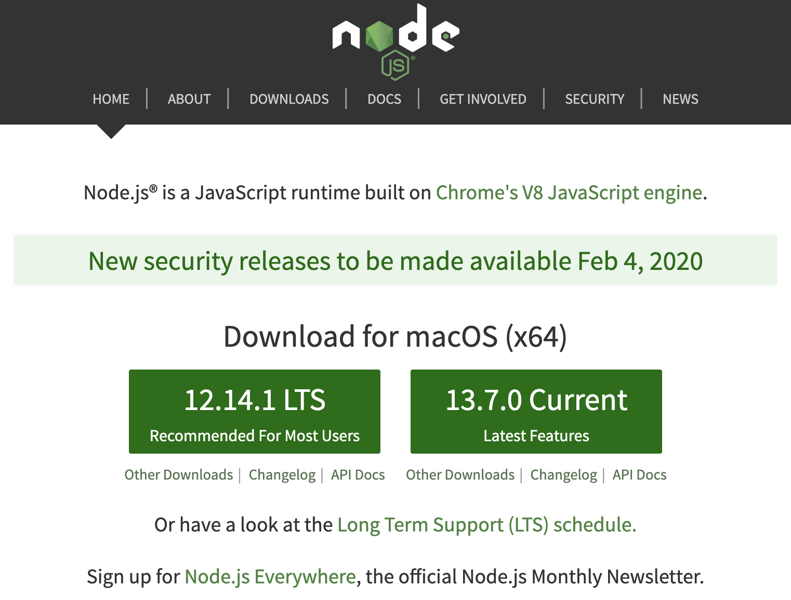
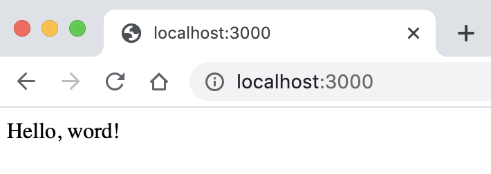
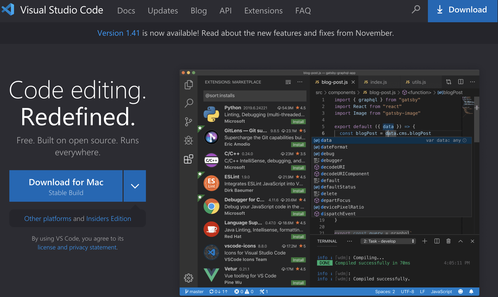
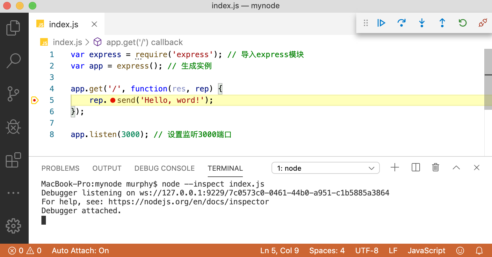

3 掌握Node.js和npm基础¶
Node.js是一个基于Chrome V8引擎的JavaScript运行环境，它主要用于创建快速的、可扩展的网络应用。Node.js采用事件驱动和非阻塞I/O模型，使其轻量又高效，非常适合构建运行在分布式设备的数据密集型的实时应用。
Node.js则是服务器端JavaScript的代码解析器，存在于服务器端的JavaScript代码由Node.js来解析和运行。Node.js也是JavaScript运行的一种环境，它为JavaScript提供了操作文件、创建HTTP服务、创建TCP/UDP服务等的接口，所以Node.js可以完成其他后台语言（Python、Java等）能完成的工作，Node.js的作用与他们类似，只不过是使用JavaScript来开发。
Node.js通过包管理器（npm）提供依赖项管理，npm是全球最大的开源库生态系统。通过npm能够管理项目中所使用的第三方JavaScript库的依赖关系。掌握npm的操作是非常重要的。
3.1 安装Node.js环境¶
可以通过官方网站下载并安装Node.js，如图3-1所示。
{kind=link}
图3-1 Node.js官方主页
读者可以选择下载和安装推荐的版本或者最新的版本。本书推荐版本为：12.14.1。
安装完成后，打开终端，键入 node -v 命令，显示node版本信息，例如：
$ node -v v12.14.1
出现上述信息，表示Node.js安装完毕。
3.2 如何使用node命令¶
打开终端，键入node进入命令交互模式，可以输入一条代码语句，点击回车键后立即执行并显示结果，例如：
$ node > console.log('Hello World!'); Hello World!
如果要运行一大段代码，可以先写一个JavaScript文件，然后再运行此文件。例如有以下hello.js文件：
// 文件hello.js中的内容 function hello() { console.log('Hello World!'); } hello();
在终端下键入 node hello.js 命令并运行，结果如下：
$ node hello.js Hello World!
3.3 学习Node.js模块知识¶
编写稍大一点的程序时一般都会将代码模块化。在Node.js中，一般将代码合理拆分到不同的JavaScript文件中，为了让这些文件可以相互调用，Node.js提供了一个简单的模块系统。 模块是Node.js应用程序的基本组成部分，文件和模块是一一对应的。换言之，每一个文件就是一个模块，而文件路径就是模块名。
在编写模块时，Node.js提供了3个很有用的函数或对象：exports对象、require函数、和module对象。
3.3.1 exports对象¶
exports对象是当前模块的导出对象，用于导出模块公有方法和属性。下面例子导出了一个公有方法：
exports.hello = function () { console.log('Hello World!'); };
3.3.2 require函数¶
require函数用于在当前模块中加载和使用别的模块。使用方法是传入一个模块名，返回一个该模块导出的对象或方法。模块名可使用相对路径（以 ./ 开头），或者是绝对路径（以 / 开头）。另外，模块名中的.js扩展名可以省略。
相对路径一般有下面几种表示方式：
以
./开头的路径，表示当前目录；以
../开头的路径，表示父目录；以
../../开头的路径，表示父目录的父目录，多个../开头的路径，目录层次依此类推；
下面是require函数使用的例子：
let foo1 = require('./foo'); // 导入当前目录下的文件，省略了扩展名 let foo2 = require('./foo.js'); // 导入当前目录下的文件 let foo3 = require('/home/foo'); // 导入绝对路径/home目录下的文件 let foo4 = require('../../foo.js'); // 导入当前目录的上2层父目录下的文件
3.3.3 module对象¶
module对象相当于当前文件的上下文，通过module对象可以访问到当前模块内容。module一般与exports对象联合使用，导出当前模块的内容。比如，有一个hello.js文件，内容如下：
function Hello() { this.sayHello = function(name) { console.log('Hello ' + name); }; }; module.exports = Hello; // module一般与exports对象联合使用
在同目录下，新建文件main.js，内容如下：
//main.js const Hello = require('./hello'); // 导入hello模块内容 let hello = new Hello(); hello.sayHello('Murphy');
打开终端，键入 node mian.js 命令并立即执行，显示结果如下：
$ node main.js Hello Murphy
3.4 掌握NPM基础¶
npm是是Node.js的包管理工具，随同Node.js一起安装，主要是提供依赖项管理。安装完成Node.js后，可以使用 npm -v 命令检查npm版本，例如：
npm -v
npm类似Java中的Maven，Python中的pip等，可以方便的管理Node.js项目中的依赖。在项目中以package.json的形式展示。
npm命令用来安装、更新或卸载模块或依赖，它们分别有许多不同的参数。
3.4.1 使用npm命令安装模块¶
使用 npm install 命令进行模块安装。安装Node.js模块有两种模式：全局模式和本地模式。
3.4.1.1 什么是全局模式(global)¶
在命令行里的 npm install 命令后添加 -g 或者 -global 参数进行全局安装，例如全局安装TypeScript：
npm install -g typescript # 或 npm install -global typescript
一旦进行全局模式安装完成后，用户可以在系统的任何地方使用该模块。上述命令表示可以在系统的任何目录下使用TypeScript命令。
3.4.1.2 什么是本地模式(local)¶
本地模式安装区别全局模式的地方就是省略 -g 参数，例如安装express：
npm install express
本地模式中，安装模块并将其保存为项目依赖（写入package.json文件），有两种场景：
保存依赖到depdendencies节点信息中，在命令后添加
--save参数：
npm install express --save
保存依赖到devDepdendencies节点信息中，在命令后添加
--save-dev参数：
npm install express --save-dev
命令install可以简写为一个小写字母 i , --save 参数可以简写为 -S （大写字母S）, --save-dev 参数可以简写为 -D （大写字母D）。例如：
npm i express # 等同于 npm install express npm i express -S # 等同于 npm install express --save npm i express -D # 等同于 npm install express --save-dev
3.4.2 如何更新依赖¶
有时依赖关系会改变。如要添加一个新的模块，但是添加该模块要求其他模块具有较高的版本号。npm提供了以下命令检查模块是否过时：
npm outdated module-name # module-name为待检查的模块名
Node.js中有两种不同的模块更新方式：
可以使用命令npm update更新指定模块。如果想要保存结果，还需要参照上面讲的本地模式操作。package.json文件也会保存新版本的信息。也可参照全局模式更新，则该命令将更新全局安装的包。
可以编辑package.json文件，更新其中模块版本依赖信息，然后运行“npm update”。这将更新模块以匹配此文件中的规范。
3.4.3 如何卸载依赖¶
执行 npm uninstall 命令卸载指定的模块。卸载依赖与更新依赖一样，也可以参照更新依赖进行操作。
3.5 开始第一个Node.js工程¶
Node.js工程是指工程里面含有package.json文件，并且本工程的所有依赖通过package.json文件进行管理。
Express是流行的基于Node.js的Web开发框架，可以快速地搭建一个完整功能的网站。我们就从Express开始，创建一个Node.js的Web工程。
3.5.1 初始化Node.js工程¶
打开终端，新建一个文件夹并进入目录下，运行 npm init 命令初始化项目，例如：
mkdir mynode && cd mynode # 新建mynode文件夹，并进入文件夹目录中 npm init # 初始化项目
按照提示输入项目的一些相关信息，例如：
$ npm init This utility will walk you through creating a package.json file. It only covers the most common items, and tries to guess sensible defaults. See `npm help json` for definitive documentation on these fields and exactly what they do. Use `npm install <pkg>` afterwards to install a package and save it as a dependency in the package.json file. Press ^C at any time to quit. package name: (mynode) version: (1.0.0) description: mynode entry point: (index.js) test command: test git repository: keywords: node author: Murphy license: (ISC) About to write to /mynode/package.json: { "name": "mynode", "version": "1.0.0", "description": "mynode", "main": "index.js", "scripts": { "test": "test" }, "keywords": [ "node" ], "author": "Murphy", "license": "ISC" } Is this OK? (yes) yes $
最后输入 yes 后，当前目录下将会生成一个package.json文件。
3.5.2 安装Node.js工程依赖¶
安装Express框架。打开终端，进入工程根目录下，输入 npm install express --save 命令进行安装，例如：
$ npm install express --save npm notice created a lockfile as package-lock.json. You should commit this file. npm WARN mynode@1.0.0 No repository field. + express@4.17.1 added 50 packages from 37 contributors in 4.77s
同样在工程的根目录下，新建index.js文件，并加入如下代码：
var express = require('express'); // 导入express模块 var app = express(); // 生成实例 app.get('/', function(res, rep) { rep.send('Hello, word!'); }); app.listen(3000); // 设置监听3000端口
3.5.3 启动Node.js项目¶
打开终端，进入工程根目录下，输入如下命令启动项目：
node index.js
使用浏览器访问 http://localhost:3000/，就可以看到效果了，如图3-2所示：
{kind=link}
图3-2 第一个Node.js工程
3.6 准备Node.js工程的开发环境¶
现在已经安装了Node.js运行环境，有了npm包管理器，并且尝试了第一个Node.js工程，但是工欲善其事，必先利其器，使用文本编辑器写代码虽然可行，但是离开发的要求还是有些距离，比如，我们的代码不光需要编辑，还需要有代码智能提示，需要进行代码调试，跟踪等。所以我们需要一个IDE集成开发环境，让我们能在一个环境里编码、运行、调试，这样就可以大大提升开发效率。本书推荐的IDE集成开发环境为Visual Studio Code（简称：VSCode），推荐的理由是不但功能强大，好用，而且免费。
3.6.1 安装IDE集成开发环境¶
如果读者还没有用过VSCode，请进入官方网站下载并安装它。如图3-3展示了其下载页面：
{kind=link}
图3-3 Visual Studio Code官方下载页面
安装完程序后，打开编辑器的方式有两种：
双击VSCode图标打开它。
在终端根目录下，输入
code .命令(code和.之间有个空格)，则将自动打开编辑器。
用户根据喜爱选择自己的方式。
3.6.2 Node.js项目结构介绍¶
打开VSCode编辑器，选择菜单栏中的“文件”->“打开目录”命令并选择上面Express项目的根目录。从编辑器中，可以看到，在Express工程中，已经有了1个文件夹和3个文件：
└── node_modules ├── index.js ├── package-lock.json └── package.json
index.js文件是本工程的核心文件，它是使用express模块的简单应用。先是导入express模块，然后创建express的实例，增加一个路由，返回文本信息。最后发布服务的同时监听3000端口。一旦有请求进入到路由，路由收到响应返回“Hello, word!”字符串。
其他文件及文件夹分别在下面进行介绍。
3.6.3 node_modules文件夹的作用¶
npm在安装模块时，将下载该模块及依赖项，并将其放入项目文件夹中的node_modules文件夹中。如果安装的模块有许多依赖项，则最终会得到一个巨大的node_modules文件夹，里面有几十个模块子目录。有时npm安装命令需要很长时间来下载和安装项目的模块和依赖。
注意：拷贝Node.js项目时，不要同时拷贝这个node_modules文件夹，因为这可能会导致不可知的后果。如果要将项目从一台电脑复制到另一台电脑，请先删除“node_modules”文件夹，然后在目标电脑上运行“npm install”安装Node.js模块。
3.6.4 package.json文件介绍¶
package.json文件记录项目中所需要的所有模块。 在Node.js中安装模块有两种不同的方式：
运行
npm install命令安装指定模块；编辑package.json文件，然后运行
npm install安装。
手动编辑package.json文件是安装多个模块时的最佳方式。
打开package.json文件，里面有刚刚通过npm安装的express模块，由于安装时省略了版本信息，npm默认安装它的最新版本：
{ "name": "mynode", "version": "1.0.0", "description": "mynode", "main": "index.js", "scripts": { "test": "test" }, "keywords": [ "node" ], "author": "Murphy", "license": "ISC", "dependencies": { "express": "^4.17.1" } }
3.6.5 识别依赖库的版本号¶
当查看package.json中已安装的模块信息时，会发现他们的版本号之前都会加一个符号，有的是插入符号（^），有的是波浪符号（~）。如上面安装的express模块：
"dependencies": { "express": "^4.17.1" }
npm中有多重方式灵活地指定版本号，以版本4.17.1为例，表3-1是示例版本号对照表：
版本 |
描述 |
|---|---|
4.17.1 |
完全匹配版本 4.17.1 |
>4.17.1 |
高于版本 4.17.1 |
>=4.17.1 |
高于或者等于版本 4.17.1 |
<4.17.1 |
低于版本 4.17.1 |
<=4.17.1 |
低于或等于版本 4.17.1 |
～4.17.1 |
约等于版本 4.17.1，相当于版本号位于区间[4.17.1, 4.(17+1).0) 即[4.17.1, 4.18.0) |
^4.17.1 |
^4.17.1 相当于版本号位于区间[4.17.1, 5.0.0) |
4.17.x |
匹配版本的前2位数 4.17.* |
* |
匹配任何版本 |
表3-1 示例版本号对照表
3.6.6 package-lock.json文件的作用¶
上述安装的express模块的版本号是: “^4.17.1”，对照表3-1所示，相当于版本号位于区间[4.17.1, 5.0.0)，意思是，在这个区间范围内的版本号，都是允许的。那么如何保证每个人电脑上执行的 npm install 命令后安装的依赖版本都是一样的呢？npm处理版本范围时，依据更新到最新版本的原则，即如果package.json中记录的依赖包的版本是一个版本范围, 一旦执行 npm install 命令会导致这个包更新到最新版本。
更新到最新版本的原则并没有解决所有问题，如：
不同用户的npm版本可能是不同的；
不同用户执行
npm install命令的时间不一致，如存在某个依赖包的版本昨天和今天的版本不一致。
如果依赖包的版本不一致, 会导致开发环境和生产环境上的产品不一致，即使同在开发环境，也会导致不同成员之间的本地环境不一致。
npm使用package-lock.json文件来解决这个问题。
package-lock.json文件锁定所有模块的版本号，包括主模块和所有依赖子模块。当执行 npm install 命令的时候，npm从package.json文件读取模块名称，从package-lock.json文件中获取版本号，然后进行下载或者更新。
一旦修改package.json文件，并且执行了npm安装、更新和卸载等命令, 都会自动同步修改package-lock.json文件。
3.6.7 如何调试(debug)Node.js工程¶
在VSCode中调试Node.js代码，很容易，先在需要打断点的代码处打上断点，然后使用 node --inspect index.js 命令启动工程。
以上面的Express工程为例，调试的步骤如下：
在index.js文件中打上断点；
然后在VSCode里的TERMINAL面板中，工程的根目录下输入
node --inspect index.js命令启动工程；触发请求，使代码进行到断点处。如打开浏览器，输入地址：http://localhost:3000 触发请求；
当代码进行到断点处时，VSCode中显示的界面如图3-4所示：
{kind=link}
图3-4 在Visual Studio Code中调试代码
3.7 小结¶
本章介绍了Node.js以及npm的基础知识，并且开始了第一个Node.js工程，详细的介绍了工程结构和相关的工程文件，最后演示了如何调试工程代码。